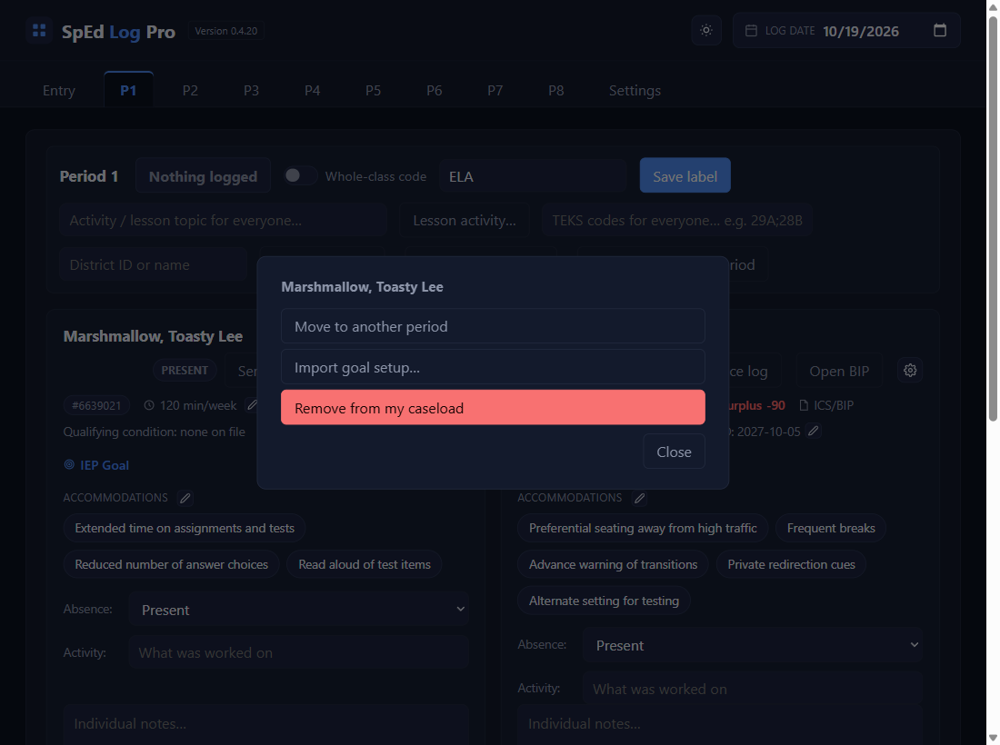
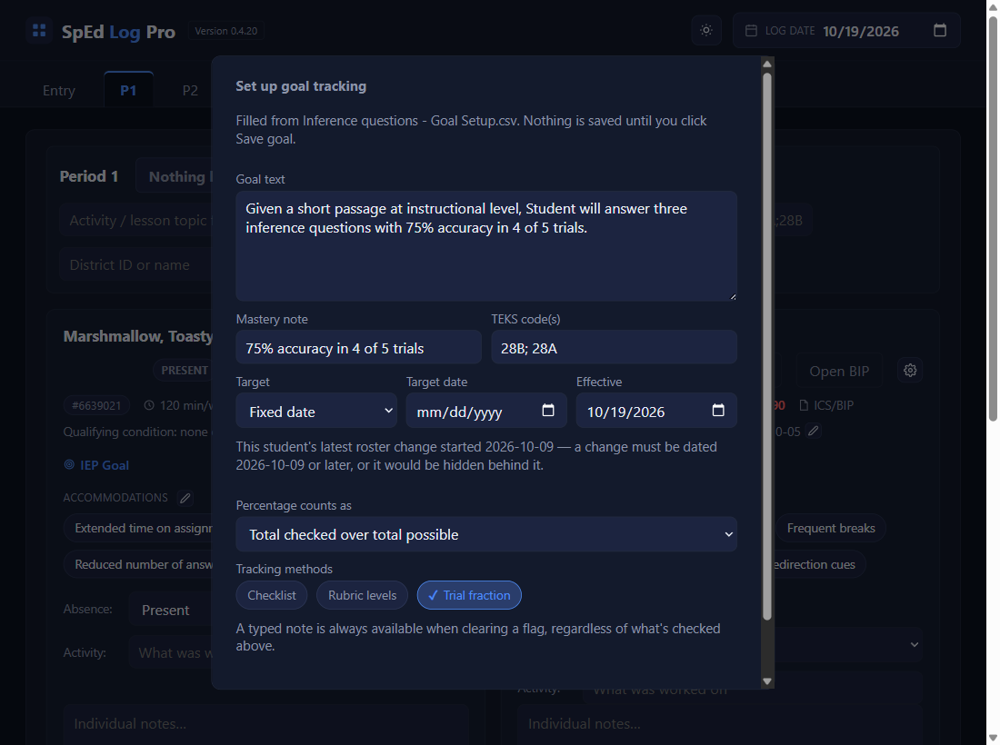
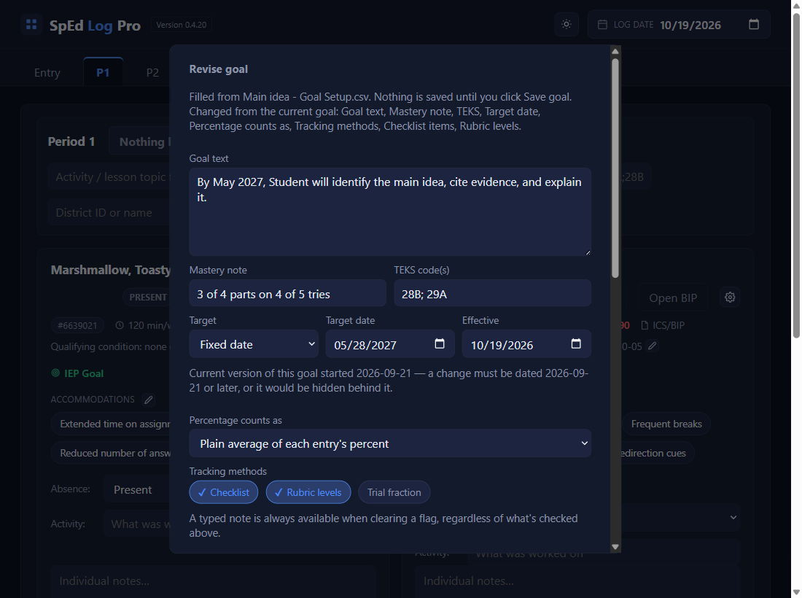
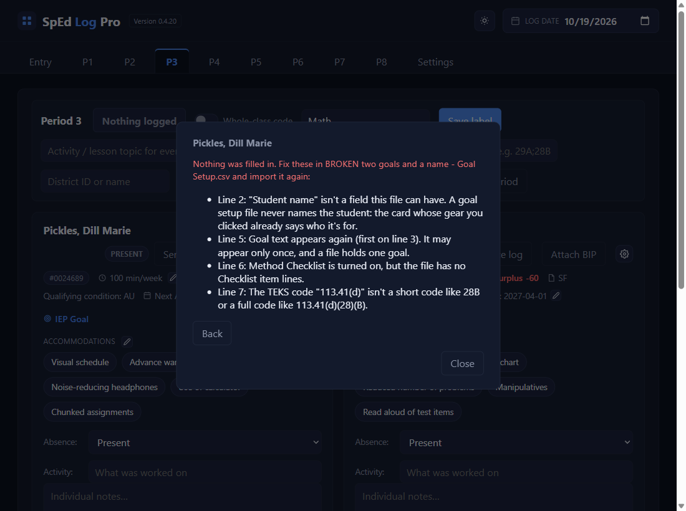
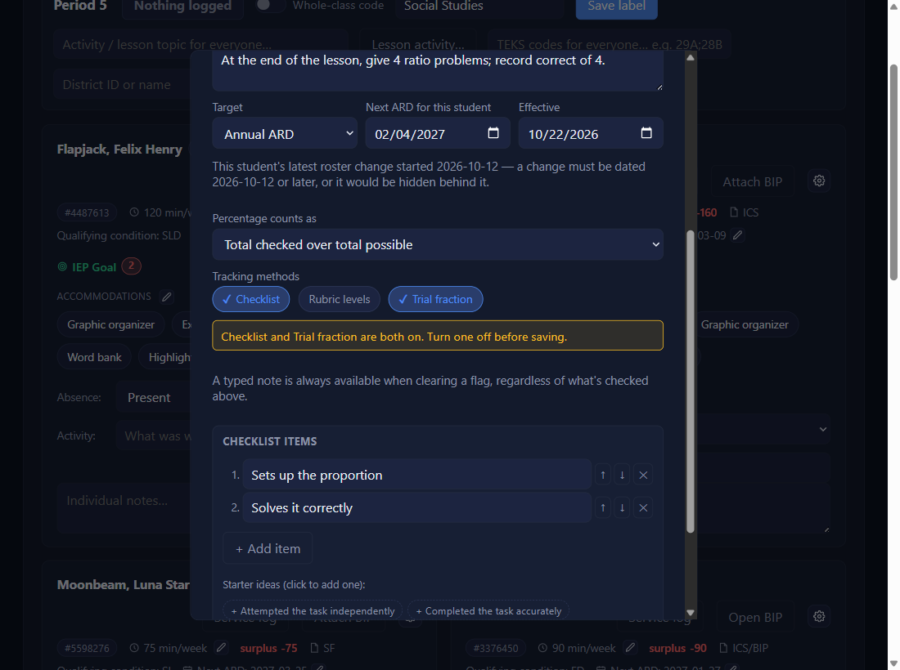

Import a goal setup
Click the gear, then Import goal setup…
On the student's card, click the gear. In the pop-up, click Import goal setup… and choose the file your project made. The gear on that student's card tells the app whose goal it is, so the file never needs a name.

Check the filled-in pop-up, then Save goal
Set up goal tracking opens with the file's goal text, mastery note, Goal checkNEWfor version 0.4.21 and beyond, TEKS, and tracking methods. A grey line at the top says which file filled it. The file never sets Effective or Next ARD, so set those, and Target if the file didn't. Change anything you like, then Save goal, the same as if you'd typed it.

Already tracking a goal? It's a revision
If the student already has a tracked goal, Revise goal opens instead, with a second grey line naming what the file changes, like Changed from the current goal: Goal text, TEKS, Checklist items. The old goal's progress stays. When the file's goal text differs from the current goal's, This is a new goal (start a new count) at the bottom starts tickedNEWfor version 0.4.21 and beyond: leave it ticked for a new goal, or untick it if the file only corrects the wording. See Record goal progress, step 7.

If the file has a problem
Nothing is filled in. The gear pop-up lists every problem by line number, like a second goal in one file, a name line, a method with no items, or a TEKS code it can't read. Ask your project for a corrected file (or fix it in Notepad), click Back, and import again.

Both Checklist and Trial fraction on? Turn one offNEWfor version 0.4.21 and beyond
A goal is scored one way, never both. A file that turns on both still fills the pop-up, with a yellow line, and Save goal is refused until you click one of the two off. The project prompt on this site never writes both; an older file might.

✓ You'll know it worked
- The pop-up opens filled in, with
Filled from …at the top. - After Save goal, a green IEP Goal and
Tracking since ….
✕ Avoid these
- Saving without checking. The project suggests; you decide.
- Importing on the wrong card. The gear you click decides whose goal it is.
- Pasting names into the project. The goal's wording is all it needs.
⚠ If you see this
A target date is required when the target type is a fixed date.The file didn't say. Pick a Target date, or switch Target to Annual ARD.
Nothing was saved: nothing changed from the goal already in effect.The file matches the goal you're already tracking. Click Cancel.
Checklist and Trial fraction are both on. Turn one off before saving.Do step 5.